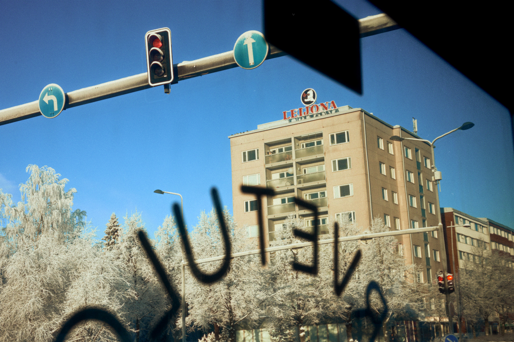
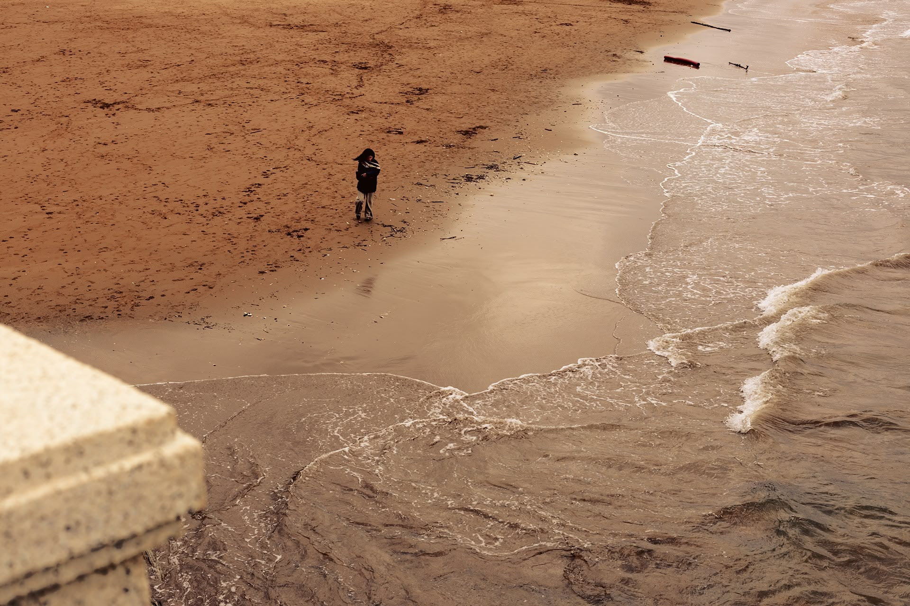
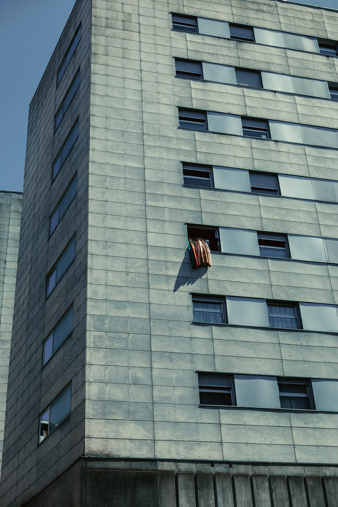
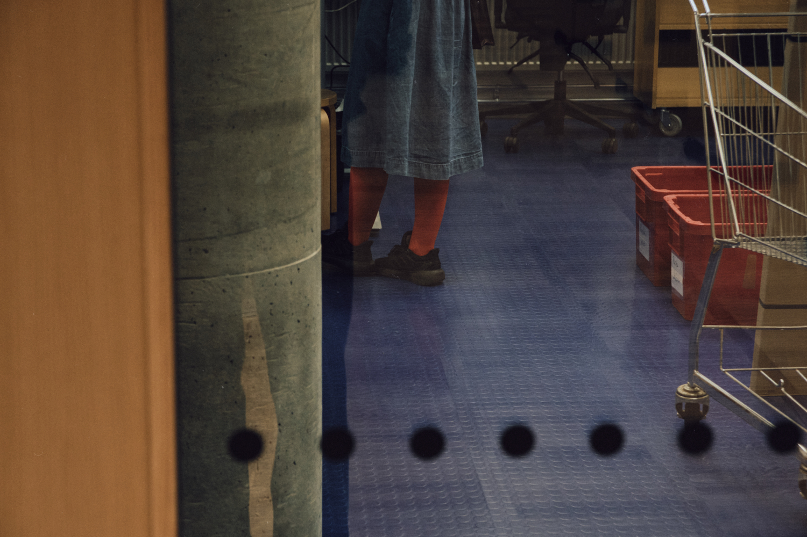
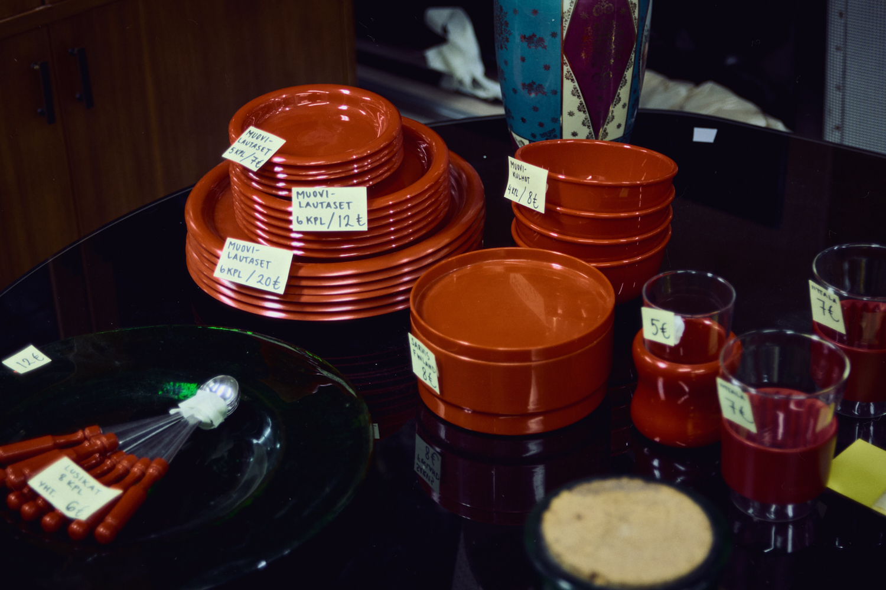
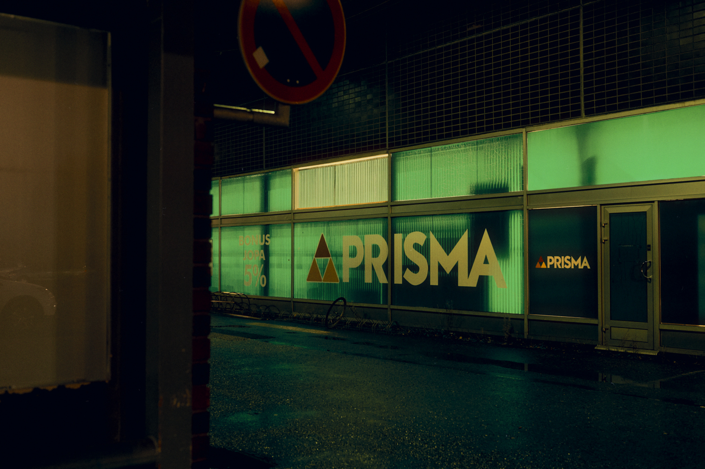

Rainy Day / Sadepäivä
Bilbao, España 2024
Rainy Day / Sadepäivä
Bilbao, España 2024

Bus Window / Katse onnikasta
Oulu, Finland 2026

Alone / Yksin
Bilbao, España 2024

Concrete Wonder / Betoni-ihme
Bilbao, España 2024

Library Wonders / Kirjaston ihmeet
Oulu, Finland 2026

Plates / Lautaset
Oulu, Finland 2026

Ainola Park / Ainolanpuisto
Oulu, Finland 2026

Raksila Markets Prisma / Raksilan marketit Prisma
Oulu, Finland 2025

Lauttasaari Metro Station / Lauttasaaren metroasema
Helsinki, Finland 2025

National Landscape Kylmälänkylä / Kansallismaisema Kylmälänkylä
Muhos, Finland 2025

Red Leaf / Punainen lehti
Tyrnävä, Finland 2025